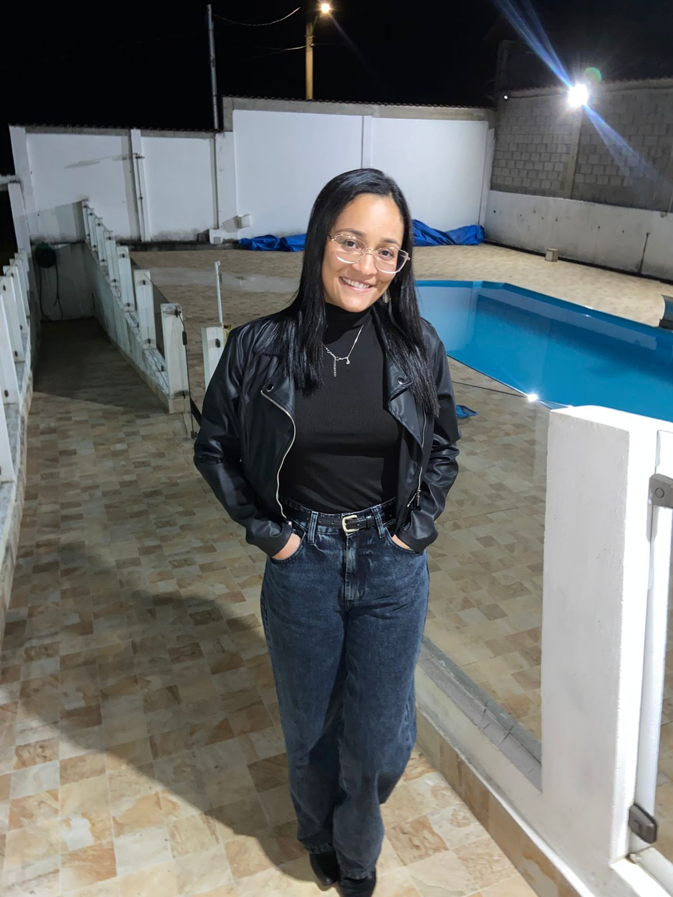

Bem-vindos à minha página pessoal!
Meu nome é Larissa Iamara e sou graduanda de Pedagogia, além de estudante de Programação Web. Acredito firmemente que a área da Pedagogia será muito utilizada e fará uma grande diferença na minha vida acadêmica. Gosto muito de estudar, aprender novas tecnologias e estou desenvolvendo este site semântico para a minha atividade acadêmica.
Meus Hobbies e Interesses
- Estudar novas tecnologias aplicadas à educação
- Ler livros de Pedagogia e desenvolvimento infantil
- Praticar programação web
